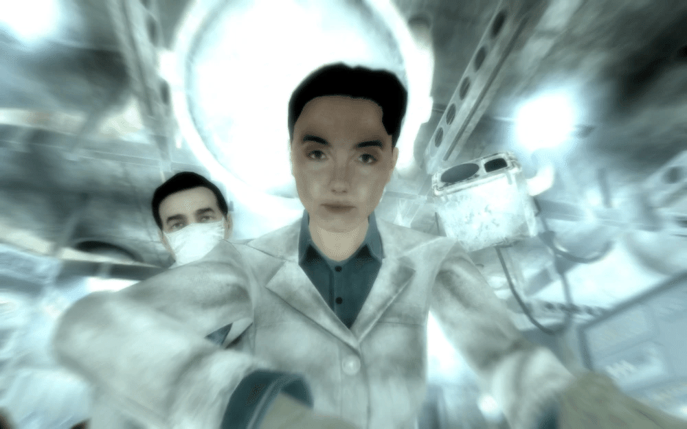

Butch DeLoria
ブッチ・デロリア
概要
マジソン・リー博士 (Dr. Madison Li) は、キャピタル・ウェイストランドのリベット・シティ（Fallout 3）および連邦のインスティチュート（Fallout 4）におけるトップクラスの科学者であり、環境浄化プロジェクト（Project Purity）ならびに高度システム部門（Advanced Systems）の責任者を務めた傑出した人物です。彼女はシリーズを通して、キャピタルの水源浄化、リバティ・プライムの修復、そしてインスティチュートの命運を左右する核融合炉の開発など、アメリカ東海岸における歴史的な科学的ブレイクスルーに大きく関与しています。
背景
若き日とプロジェクト・ピュアリティ (2250年代〜2258年)
マジソン・リーは2229年に生まれました。若く優秀な科学者であった彼女は、キャピタル・ウェイストランドの放射能汚染された水を完全に浄化するという壮大な計画「プロジェクト・ピュアリティ」を主導するチームに入り、ジェームズとキャサリンの強力な協力者となりました。
計画がジェファーソン記念館で本格的に始動する中、リー博士はジェームズに対して同僚以上の強い尊敬と愛情を抱くようになりましたが、彼にはキャサリンという優れた妻がいたため、その想いは内に秘められていました。しかし2258年、キャサリンは主人公の出産中に合併症により命を落とします。愛する妻を失い、赤子の安全な環境を最優先に考えたジェームズは、完成間近であったプロジェクトを突如放棄し、Vault 101へと姿を消しました。長年の夢と努力が水泡に帰したと感じたリー博士は、彼に対して強い裏切りを覚え、怒りと絶望と共に初期メンバーのチームを去ることになります。
リベット・シティにおける主任科学者 (2258年〜2277年)
プロジェクト崩壊後、リー博士はキャピタル最大の人類居住区である座礁した空母「リベット・シティ（Rivet City）」の科学ラボに到着します。彼女はそこで自身の科学的知識を活用し、水耕栽培の運営や、船の電力を支える小型原子炉の保守などを行い、居住区の発展に直接的に貢献しました。
この過程で、リベット・シティの創設者の一人であり天才科学者であったピンカートンを政治的に追い出し、自身が科学部門のトップに立ちました。これ以降、彼女は「キャピタル全体を救う」という無謀な夢ではなく、「目の前の人々を現実に助ける」という堅実な科学に長年没頭していました。また、この時期にDr.ジマーによる脱走アンドロイド（A3-21）捜索などにも一部知識を提供するなど、連邦から来たインスティチュートの科学者とも接点がありました。

ジェームズとの再会とエンクレイヴの強襲
2277年、Vault 101から失踪したジェームズを探して、成長した主人公がリベット・シティの彼女のラボを訪れます。彼女は当初、ジェームズへの過去の怒りから主人公を冷たくあしらいますが、最終的には主人公に協力して手がかりを提供します。その後、ジェームズ本人がリベット・シティに到達し、彼女に対して再度プロジェクト・ピュアリティへの協力を懇願しました。
かつての怒りは完全に消えてはいなかったものの、リー博士は再びジェームズへの信頼を取り戻し、仲間と共にジェファーソン記念館へと戻ります。しかし、プロジェクトの再稼働直前、オータム大佐率いるエンクレイヴ軍が記念館を強襲。ジェームズはオータム大佐らから施設と主人公を守るため、自らの命を犠牲にしました。リー博士は絶望と悲しみのなか、主人公らと共に地下水路を通ってB.O.S.の防衛拠点である「要塞（Citadel）」へと決死の脱出を果たしました。
リバティ・プライムとキャピタルからの決別
要塞への到着後、彼女は恩讐を越えてエルダー・リオンズが率いるB.O.S.に協力し、長年動かせなかった巨大兵器「リバティ・プライム」の修復作業を主導します。彼女の天才的な頭脳により長年の動力供給システムの問題が解決され、結果としてエンクレイヴ撃破の決定的な切り札となりました。
エンクレイヴ撃破後、彼女は浄化プロジェクトの完成に取り組みますが、B.O.S.が大量の純水を「自分たちの戦力を高める配給と政治的ツール」として利用していく軍事的な姿勢に、彼女は強い不信感と嫌悪感を抱くようになります。軍国主義的な彼らの元では真の純粋な科学は成し得ないと悟った彼女は、キャピタル・ウェイストランドをひっそりと離れ、かつて接点を持った「高度な科学力を持つ組織」の情報を頼りに北の連邦（The Commonwealth）へと旅立ちました。
インスティチュートと高度システム部門 (2287年)
連邦に到達した彼女は、地下に存在する巨大研究施設「インスティチュート」に見出され、彼らの理念に共感して組織に加わりました。彼女の開発力は瞬く間に評価され、彼女は「高度システム部門（Advanced Systems）」の責任者という最高の地位にまで上り詰めました。
インスティチュートでは、彼女はテレポーテーション・ネットワークの維持や兵器の開発、そして組織の究極の目標である「フェーズ3」計画（新型ベリリウム撹拌機を用いた自立型核融合炉の起動）を主導していました。しかし指導者ファーザーによる秘密主義に対し次第に不満を募らせ、とりわけ同僚のブライアン・ヴァージル博士の謎の死（失踪）がファーザーの粛清ではないかと疑い、閉鎖区画の調査を行っていました。
唯一の生存者との邂逅
2287年、インスティチュート内部で主人公（唯一の生存者）と出会います。インスティチュートルートの場合、彼女は主人公の協力によってベリリウム撹拌機を回収し、巨大な核融合炉を起動させ、最後はB.O.S.東海岸支部の壊滅に科学的知見を提供します。
一方、B.O.S.ルートを進む場合、エルダー・マクソン（かつて彼女が要塞で会った従者の少年）の命令により、主人公はインスティチュートへ潜入し彼女を連れ戻す任務（Liberty Reprimed）を受けます。主人公が彼女を説得し、閉鎖されたFEVラボから「ヴァージルへの処刑宣告ホロテープ」を見つけ出してファーザーの非道を告発すると、彼女は悲しみと怒りとともにインスティチュートを裏切ることを決意します。
再びB.O.S.の保護下に戻った彼女は、より強烈な軍事組織へと変貌したB.O.S.の元で皮肉にも再び「リバティ・プライムを修復し、第二の故郷であるインスティチュートを焼き払う」ための最高技術責任者として働く運命となるのです。
感想
「トンネルスネーク・ルールズ！（トンネルスネーク最強！）」というキャッチフレーズでおなじみ。彼を見捨てて母親を虫の餌食にすることもできますし、外の世界に引き連れて『本物のヤバい奴ら（レイダーたち）』を見せつけてやることもできる、FO3における愛憎入り混じる名キャラクターです。
This article was created by translating and editing Butch DeLoria from Nukapedia: The Fallout Wiki.
Licensed under the Creative Commons Attribution-Share Alike License (CC BY-SA 3.0).
© Overseer Mohi's Terminal — Fallout Lore Archive
コミュニティ維持のため、寄付を受け付けております。
> COMMENTS